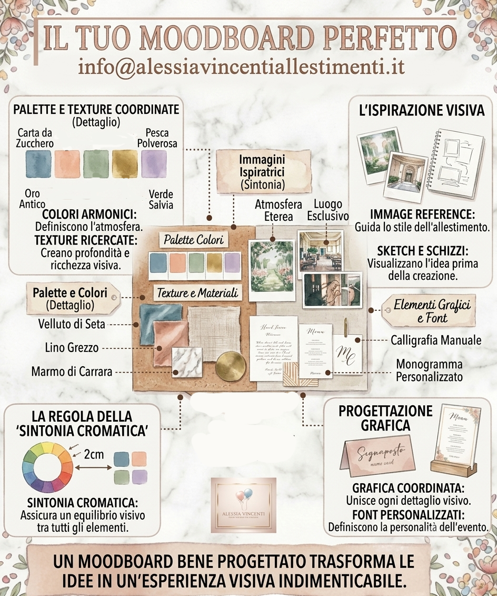
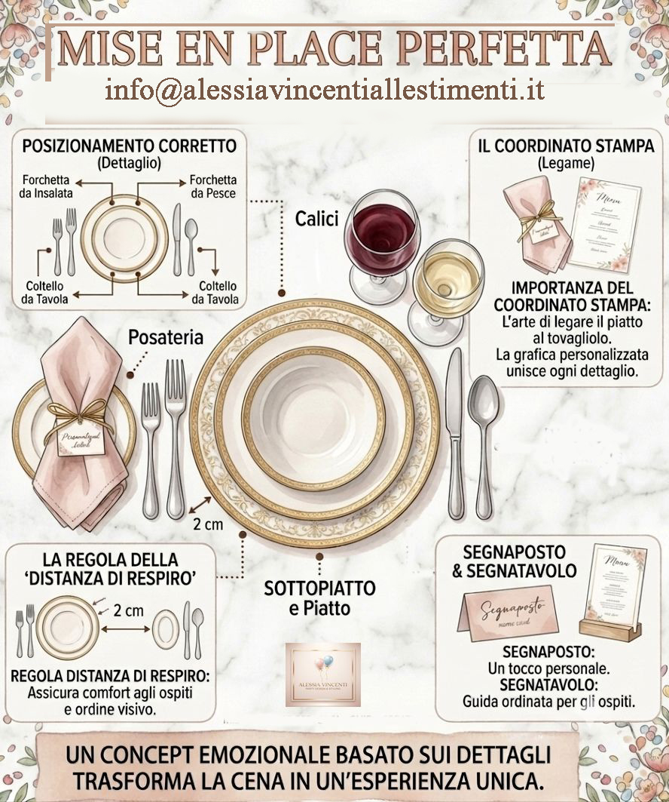

Consigli base
Scopri le basi per allestimenti scenografici impeccabili.
Ciao! Sono Alessia Vincenti, Party Design & Styling. Realizzo su Roma e provincia allestimenti scenografici completi di decorazioni coordinate. Ho scritto per te questi approfondimenti per farti scoprire come nascono i miei allestimenti e quanto studio c'è dietro ogni mia creazione. Se sei un'appassionata del settore, spero ti aiutino ad ampliare il tuo bagaglio conoscitivo.
Buona lettura e, se hai domande, sono qui per aiutarti a rendere speciale il tuo prossimo evento!
Clicca sulle foto per leggere l'articolo completo



